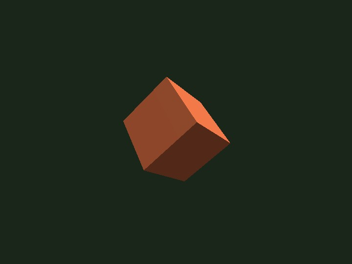

low_level
English | 日本語

概要
- README.md の「標準の使い方」にある low-level 例を、そのまま実行しやすいサンプルとして切り出したものです
- Screen、SmoothShader、Space、Shape、Primitive を直接つなぎ、WebgApp を使わずに最小構成の 3D 表示を作ります
- 起動時に WebGPU と shader を初期化し、projection matrix を設定してから、立方体 1 個だけを scene に置いています
- object は毎 frame 少しずつ回転するため、辺と面の向きが変わり、立体感と light の当たり方をそのまま確認できます
- resize と orientationchange に合わせて canvas size と projection を更新するので、PC とスマホで縦横比が崩れにくい構成です
実行方法
- 実行ファイルは ./low_level.html です
- WebGPU に対応したブラウザで開き、必要に応じて help panel や HUD と合わせて確認してください
使用している webg 機能
- Screen: canvas と WebGPU 初期化を担当する
- SmoothShader: 最小の立体表示で使う標準 shader
- Matrix: projection matrix を作る
- Space: scene graph と draw 順序を保持する
- Shape: primitive を GPU buffer と材質へまとめる
- Primitive: 立方体 mesh を作る
確認ポイント
- 起動直後に青い立方体が中央へ表示され、黒寄りの背景の上で自動回転することを確認します
- 立方体が Y と X の両方へ少しずつ回ることで、辺の向きと光の当たり方が変化することを確認します
- browser window の resize やスマホの回転後も立方体がつぶれず、縦横比が保たれることを確認します
- WebgApp を使わなくても、Screen -> shader -> projection -> Space -> Shape -> draw の順で最小表示が成立することを確認します
操作方法
- このサンプルは操作なしで自動再生します